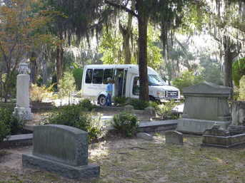
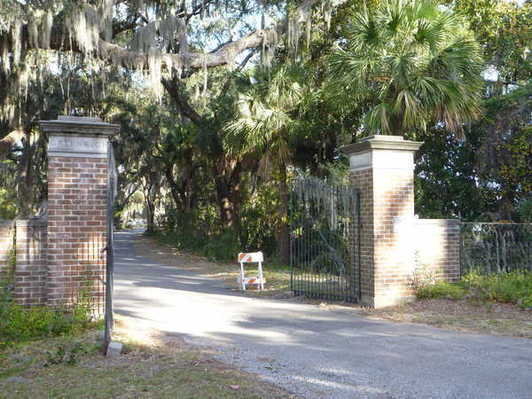

If you are looking for the "Bird Girl" statue from the cover of the book you won't find it here. That book cover made it famous and it became far too valuable to leave in the open, so it has now been placed in a museum. But there are other evocative statues here.
loading...
loading...
loading...
loading...
loading...
The bench lists some of his many songs and has a caricature he drew of himself.
loading...
loading...

And naturally I had to visit the composer Johnny Mercer. He wrote many songs in The Great American Song Book. Tour buses stop here.
loading...
The first stop in Bonaventure is the Aiken plot. In the book a woman named Mary Harty sits with John Berendt and they sip martinis. She recounts the story of the fire at the dinner party mentioned above. It turns out they are sitting on the bench which is also Conrad Aiken grave marker. She also points out the nearby marker for Dr. William F. Aiken and his wife, Anna, both
died on February 27, 1901. She recounts the story of the tragic murder suicide and deliberately spills a little of her drink as a tribute.
loading...
Bonaventure Cemetery is huge, you could walk all day and not see all of it.
Lucky for me there were no mosquitoes this day, but I understand they can get pretty bad. Bring repellent.
It is separated from Boneventure by a fence. Fortunately I found a spot by the water where I could slip through and save a lot more walking.
A story about the about the place which was orignally a plantation and only later became Boneventure:
This cemetery lies on the grounds of what was once a great oak-shaded plantation, built by Col. John Mulryne. In the late 1700s, during a formal dinner party; one of the servants informed the host that the roof was ablaze and that nothing could be done to stop it. Mulryne rose calmly, clinked his glass, and invited guests to pick up their dinner plates and follow him into the garden, where they ate the remainder of their meals in the glow of the flames while the house burned to the ground.
After dinner the host and guests threw their crystal glasses against the trunk of an old oak tree.
Legend has it that, on still nights, you can still hear the laughter and the crashing of the crystal.
Before leaving Greenwich I tried to figure out where Minerva the "voodoo priestess" and John Berendt (author of the book) would have come ashore when visiting by boat. It is impossible to be sure but I found a spot where I thought the best landing would be, right where this guy is fishing. It's a bit of a walk from there to Dannys grave, maybe 10 to 15 minutes. Really creepy at night I bet.
loading...
Visitors have left many small offerings. Some are hard to fathom, like the birds nest with eggs (perhaps symbolising rebirth?). I can only speculate.
loading...
loading...
loading...
It took a bit of hunting but the sections are marked and with a bit of trial and error I found Block G. And then it was pretty easy. The path was well worn. Danny, like everyone in the book, became famous and he seems to have quite a few visitors.
loading...

loading...
From the bus stop I proceeded on foot. Dannys marker was the
furthest point so I wanted to go there first and work my way back
through Bonaventure.
loading...
loading...
8 Nov 2011 I did a side trip to the town of Screven, covered in the next section. On my return it was time to visit "The Garden", actually the famous Bonaventure Cemetery, where many interesting persons are buried and some of the action in the book takes place. There are actually three cemeteries adjacent to each other. Danny Hansfords plot, where I wanted to go first, is actually in Greenwich, to the Northeast of Bonaventure.
As usual I was traveling without a car. The bus took me within about a mile of the entrance. From there it was walk, walk, walk.
After Mercer house I strolled through the party zone and to the waterfront. There was a big wooden ship on display.
loading...
loading...
loading...
In the book there are many colorful characters but the main drama focuses on a fellow named Jim Williams and his young "friend" and employee Danny, who was a wild character and winds up getting shot by Jim.
Jim Williams was an antique dealer who also bought and restored many historic homes, long before "house flipping" became a fad. His center piece and the house he lived in was the Mercer house on one of the twenty two historic squares of Savannah. The house was was commissioned by General Hugh Mercer, great grandfather of the composer Johnny Mercer, neither actually lived in the house. It was obscure and actually falling to ruin until Williams, a fairly colorful character himself, restored it. Then it became world famous as a result of the events that took place and the success of the book.
This was the only tour I took in town since it is the only way to see the inside. Photography inside is strictly prohibited (and they watch). Someday I will have to find a good work around for situation like that. If you watch the movie you will see scenes shot inside.
So when we left our intrepid traveler he was on the train to Savannah.
In preparation for my visit I had read the very popular Savannah story, "Midnight in the Garden of Good and Evil".
If nothing else it has a great title and in fact I found it to be a pretty good book as well.
Of course the Savannah in the book is not really accessible to casual tourists like myself and I wonder if it even exists any more but the place itself is very beautiful and exceeded my expectations.
It is however inundated with tourist buses which I am sure could have loaded me up with facts and trivia, most of which I would forget within moments of hearing it. My approach was to simply put on my walking shoes and rack up the miles, and that I did.
6 Nov 2011 When I first arrived in the city I started near the visitors center and just walked. The streets are lined with old and very beautiful houses and giant trees overhanging the roads. The Spanish moss is so thick that for a while I truly wondered if it could all actually be natural. Even dead trees in the cemetery in town were simply laden with the stuff. Can so much grow even if the tree is dead with stark naked branches? Yet how else could it get there, it would require an army of volunteers to relocate that much moss, so it can only be natural.
Dispatch Number 4a Savannah Georgia including Bonaventure Cemetery
November 6 and 8, 2011
Now stop for a moment and consider the job of Night Watchman at Bonaventure Cemetery. No matter how skeptical you might be about the supernatural it would be hard to keep your imagination in check at a place like this, especially when you are totally alone at 2 O'clock in the morning on a misty night.